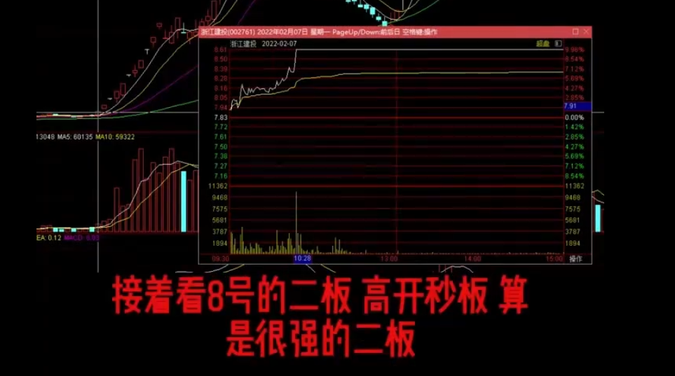
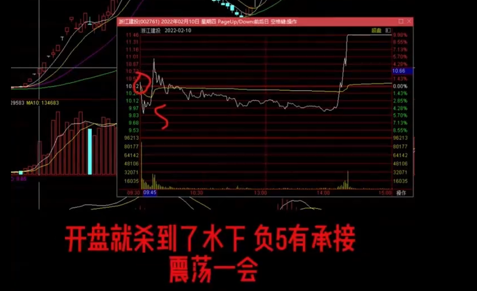
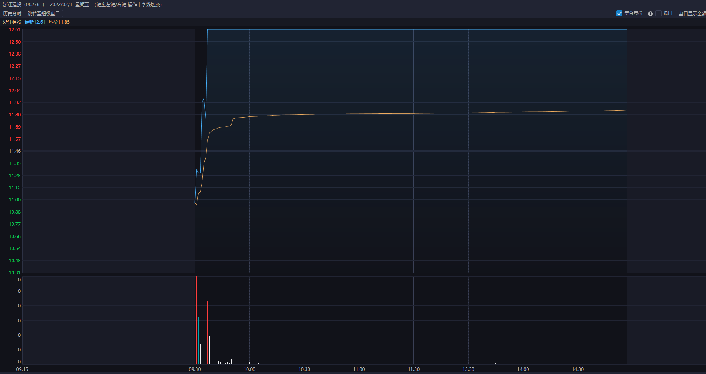
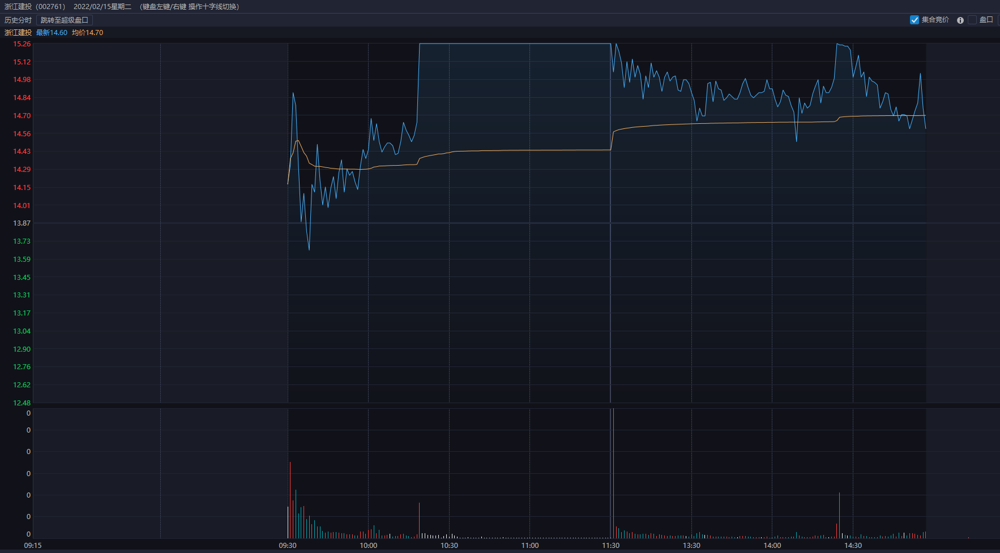
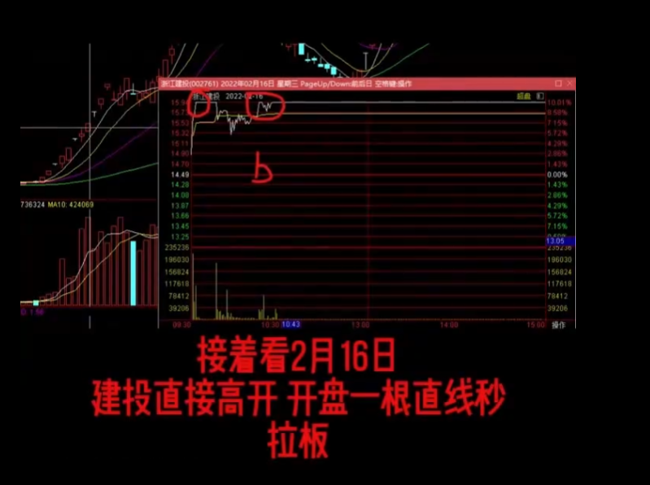
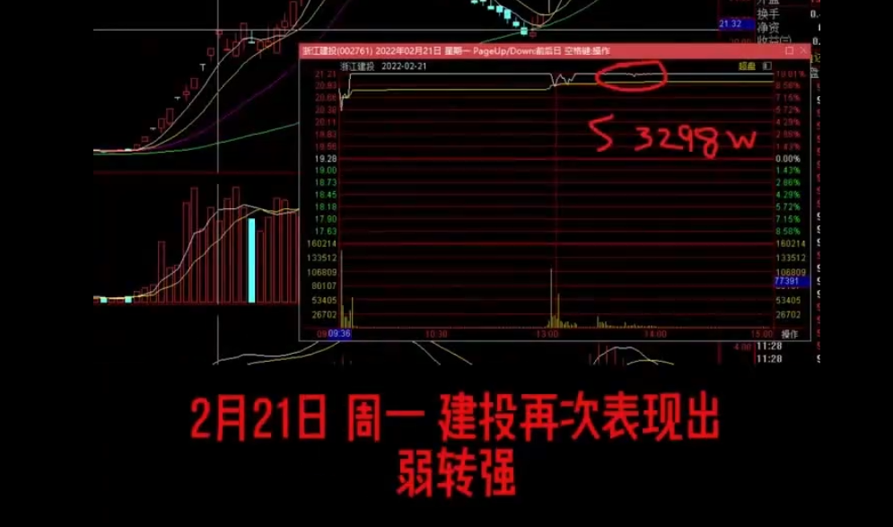
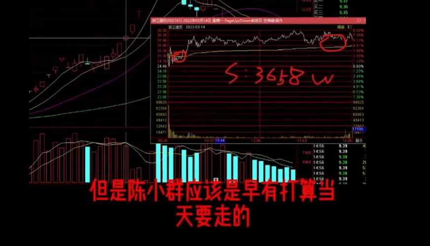
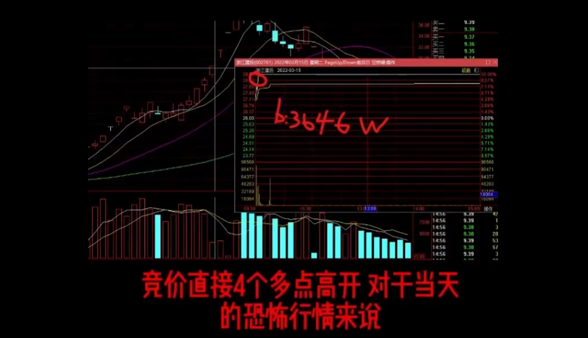
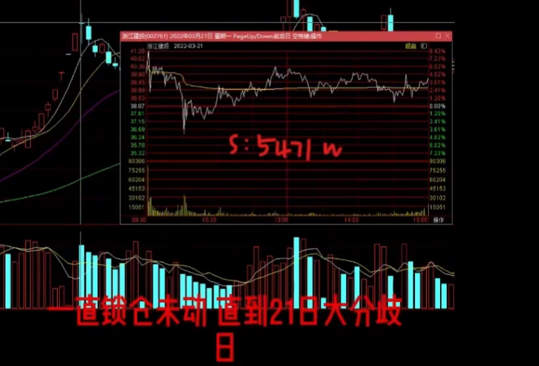

一句话总纲
真正的龙头不是一路一致时最容易买的那只，而是分歧时仍然有承接、隔天还能超预期转强、让市场继续愿意跟随的那只。
这篇页面把 Notion 原文重新整理成一个可继续打磨的案例框架。重点不只是复述“浙江建投很强”，而是把陈小群这套龙头战法里最关键的几层逻辑拆出来： 大盘和情绪先定模式，资金合力决定谁是真龙头，走势节奏决定是锁仓还是做T，连续低于预期才是真正的离场信号。
真正的龙头不是一路一致时最容易买的那只，而是分歧时仍然有承接、隔天还能超预期转强、让市场继续愿意跟随的那只。
一致加速就锁仓，让利润滚动；反复分歧但还能封板，就围绕同一只票做T，既降成本，也让自己不被盘中震荡甩下车。
高位连续加速后出现漏单、连续两天爆量炸板反复、高位高开又缺少新方向接力，这三种组合一旦出现，风险会迅速大于收益。
原文最有价值的地方，是把“龙头”从一个静态标签，改写成一个动态过程。它强调的不是某个板数神话，而是资金在不同环境里如何反复完成三件事：识别核心、消化分歧、继续合力。
龙头的本质，不是先涨停，而是在一众高位票里，市场一次次还是选择它。
这也是陈小群这类打法最难的地方。你看的不是“它强不强”，而是“当分歧出现时，谁还敢继续接、谁还能把分歧重新变成一致”。
先判大盘和情绪，再决定做消息扩散，还是做高位抱团。环境不对，龙头属性也会变。
弱转强比一路无脑加速更重要。真正的龙头，往往是在分歧之后重新上板的那一刻完成确认。
锁仓和做T不是对立关系，而是对应两种走势。持续一致用锁仓，反复分歧用做T。
卖点不是靠恐慌感受，而是靠结构破坏。连续低于预期、分歧后再也转不强、或连续两天爆量炸板，才是真正的危险区。
如果把原文内容压缩成一个可以反复调用的模型，我会把它整理成下面五层。这样以后再复盘步步高、中交地产，甚至其他现代高标，你都可以用同一套框架去套，而不是只记住浙江建投这个名字。
原文非常适合把交易者从“看涨停板数量”拉回到“看资金行为”。但如果我们想把它打磨成一个可以长期复用、甚至以后给别人看的案例网页，还需要把一些隐含前提补到台面上。
把“龙头”从一个结果词，变成了一个过程词。不是先定义龙头再解释走势，而是通过分歧、承接、换手、弱转强这些动态证据，反推谁才是真正的龙头。
很多人能买到强票，却拿不住。原文最实用的一点，是把“继续持有”写成了可观察的条件组合，而不是靠主观信心硬扛。
做T在这里不是单独策略，而是龙头震荡段里的风险管理工具。这个定位很重要，不然做T很容易变成反复把自己洗出去。
文章里对每一板的强弱判断很清晰，但缺少具体日期、当日指数环境、同期高标和题材强弱对照。没有这些，读者学到的可能只是感觉，而不是框架。
真正让案例站稳的，不只是“浙江建投为什么成了”，还要写清楚“哪些长得像浙江建投的票，最后没有走出来”。没有反例，框架很容易被过拟合。
原文给了方法论，但你还没把自己的买点、做T条件、仓位纪律、卖点定义放进去。下一版网页最重要的，不是多写，而是把你的口径写出来。
第一波更像“高位里不断完成分歧转一致”，第二波更像“平台之后再起一波，前半段克制、后半段加速，最后用爆量分歧确认结束”。把这两波分开看，比笼统说“妖股很猛”有用得多。
原文认为，这一波最重要的不是前面连了多少板，而是四板和五板都出现了“不及预期开盘后又被资金重新拉强”的过程。这说明资金不是情绪性追高，而是在主动维护它的高位地位。

这是你定义的第一波起手买点，核心不是板数，而是高开后马上走强，说明市场已经开始把它往前排核心上推。

你把这里同时看成盘中冲高回落的管理点，以及尾盘弱转强、水上均线承接后的重新确认点，这个口径很适合做复盘。

这是你最明确的一类龙头买点：不是一致板上追，而是开盘先分歧，随后在水上均线上重新转强。
七板附近的大分歧和历史天量，按普通理解已经足够吓人。但文章的重点是，隔天还能继续高开上板，说明昨天的炸板不是纯兑现，而是一次剧烈但成功的换手，旧筹码出去，新筹码愿意接。

你把这里列为第一波重要卖点之一，说明你更看重断板下杀本身带来的风险释放，而不是事后才去解释它是不是换手。

这是你第一波里最有代表性的超预期买点。前一天已经出现大分歧，但隔天开盘后还能快速转强上板，市场继续选择它。
原文把十一板定性为“非常大的分歧，危险很高”。这里的重点不是高度本身，而是连续两天炸板反复且爆量后，第三天大概率进入结束周期。这是整篇文章里最明确的风险节奏提示之一。

这里就是你定义的终极卖点。高度、监管、爆量、烂板和炸板叠在一起，已经不再是“还能不能格局”，而是必须尊重风险。
第二波的起点不是情绪冲动，而是平台突破和高换手洗筹。文章把“创新高放量、换庄洗筹”看作非常关键的前提，说明第二波不是纯情绪延续，而是筹码结构重组后的再次上攻。

按你的口径，这一天本身不是直接追的节点，而是为下一天的三板反包强上板做铺垫。

这是你第二波最明确的参与点。前一天给足分歧，第二天直接反包上板，属于很典型的“分歧后的再次选择”。
第二波五板、六板的加速和分歧处理都很强，但七板未板时出现冲高回落、巨大量能，已经是标准的龙头分歧日。后面连续两天低于预期，文章明确给出的结论就是“彻底走弱，再彻底出局”。

你把这里定为第二波的核心卖点，逻辑非常清楚：不是看它跌没跌停，而是看它已经用巨大量能把强势结构耗尽了。
这里我按你的口径，把关键节点整理成“位置、性质、信号、执行、短评”五列。以后你再看浙江建投时，可以先扫这两张表，再回头对照图片和全文细节。
第一波的核心是高位里不断完成分歧转一致，所以你的买点几乎都落在“分歧后重新被选择”的位置，卖点则主要集中在结构破坏和高危监管段。
| 位置 | 性质 | 信号 | 执行 | 一句短评 |
|---|---|---|---|---|
| 二板 | 买点 | 开盘强势表现，直接走强 | 可以起手，先把它纳入前排核心观察和参与名单 | 这不是低吸思路，而是最早确认它具备前排核心气质的节点。 |
| 四板 | 卖点 | 盘中冲高回落 | 如果前面已有仓位，这里先做风险处理，不恋战 | 四板先给你一个“它也会分歧”的提醒，所以盘中冲高回落不该完全无视。 |
| 四板 | 买点 | 盘中转弱，但尾盘弱转强，水上均线有承接 | 等它重新站稳后再上，不追恐慌，不追最低 | 这类尾盘修复最值钱的地方，是把“分歧”重新翻译成“资金还愿意维护”。 |
| 五板 | 买点 | 开盘大分歧后弱转强，水上均线重新承接 | 分歧确认后再接，属于高位里的标准龙头确认点 | 五板还能这样走，说明这只票已经不是单纯的强，而是开始具备高位合力。 |
| 七板附近 | 卖点 | 断板下杀，强分歧放大 | 先降风险，再看后面是否还能给出超预期修复 | 你这里的处理很对，先把“是不是换手成功”放后面，先尊重断板下杀本身。 |
| 八板 | 买点 | 断板转弱后，早盘开盘里面超预期转强上板 | 等它给出超预期转强，再当作重新确认的上车点 | 这就是你最认同那句总纲的真实落点：分歧后还能被市场继续选择。 |
| 十一板 | 卖点 | 碰到 200% 异动，大烂板炸板 | 视作高危兑现区，优先离场，不再做“还能不能再来一板”的赌法 | 高度、监管、爆量、烂板叠在一起时，已经不是格局能力的比拼，而是风险纪律的比拼。 |
第二波比第一波更像“平台后重新起势”的走势，所以你的节奏抓得更简洁：先等二板烂板把分歧做出来，再用三板反包确认，最后在七板放量十字星这里完成退出。
| 位置 | 性质 | 信号 | 执行 | 一句短评 |
|---|---|---|---|---|
| 二板 | 观察 | 断板大烂板，先把分歧做出来 | 不急着直接追，重点看次日能不能给出强反包 | 二板这天更像一个筛选器，目的不是马上上，而是看它值不值得等第二天。 |
| 三板 | 买点 | 二板断板大烂板后，三板反包强势上板 | 把它当作第二波最明确的参与节点 | 前一天已经释放了分歧，第二天还能直接反包，说明第二波是有资金继续接力的。 |
| 七板 | 卖点 | 放量收阴线十字星 | 把它当成主升尾声的离场点，不再等下一次侥幸转强 | 你这里的定义很成熟，因为真正危险的不是跌停，而是高位巨量十字星说明强势已经被明显消耗了。 |
节奏表解决的是“哪里值得重点看”，这一块解决的是“盘中仓位怎么处理”。我按你的原话，把做T和走弱红线都改成了同样的表格语言，方便你以后直接拿来复盘别的龙头。
你这套做T口径的核心不是炫技，而是围绕承接做滚动：冲高但不给板就先兑现，震荡后重新有承接再分批吸回，做错也接受，不因为一两次失误把整段节奏做坏。
| 场景 | 性质 | 信号 | 执行 | 一句短评 |
|---|---|---|---|---|
| 冲高无上板 | 高抛 | 盘中冲高，但迟迟封不住板，强度开始兑现 | 先抛出去锁利润，不把“也许马上就封”当成继续硬扛的理由 | 冲高不封，本质就是强度不够，先兑现是做T纪律，不是否定龙头地位。 |
| 震荡后有承接 | 吸回 | 回落后均线附近有人接，盘口没有彻底走坏 | 慢慢分批吸回来，不一次性把仓位全部打回去 | 低吸不是接飞刀，而是等承接重新出现后，把仓位一段段捡回来。 |
| 低吸高抛 | 原则 | 走势仍处于分歧震荡段，但龙头地位没有被破坏 | 围绕同一只票滚动做仓位，目标是降成本、提容错，不是每一笔都卖在最高 | 做T真正有用的地方，是让你留在车上，而不是证明自己每次都能神操作。 |
| 做T失败 | 纪律 | 抛完又拉、吸回后没立刻走强，单笔处理出现失误 | 承受单次失败，不因为一笔做坏就情绪化追补或全盘否定 | 你这句“失败没什么的，承受”很关键，因为做T本来就是赔率管理，不是百分百胜率游戏。 |
这一张表就是把“感觉不对”改成明确红线。只要出现这些结构信号，主逻辑就要从“还能不能持有”切到“先退出，再观察”。
| 触发项 | 性质 | 信号 | 执行 | 一句短评 |
|---|---|---|---|---|
| 连续两天爆量收阴线 | 走弱 | 高位连续放量却收不回去，抛压开始持续化 | 视作主升节奏明显破坏，优先退出，不再按普通分歧处理 | 一天还能解释成换手，两天连着来，大多已经不是强势洗盘了。 |
| 爆量长上影线 | 走弱 | 上冲过程中兑现盘重，尾盘留下明显长上影 | 不把它美化成“洗洗更健康”，先按高位兑现压力上升处理 | 高位长上影最危险的地方，是上方已经有人明确不愿意再锁仓。 |
| 爆量长十字星 | 走弱 | 振幅很大、换手很重，但收盘无法重新明确选择方向 | 把它当作强势衰减信号，后面只接受极少数超预期修复 | 巨量十字星不是中性信号，放在高位往往代表分歧已经吞掉了趋势惯性。 |
| 高位出现封死跌停 | 走弱 | 市场直接放弃承接，跌停被封死 | 视作结构性结束信号，不再用“龙头会不会反核”安慰自己 | 真正的龙头可以有大分歧，但高位封死跌停已经接近合力瓦解。 |
| 破十日线趋势线 | 走弱 | 趋势支撑失守，修复节奏开始被破坏 | 按趋势破位处理仓位，除非重新站回并超预期，否则不急着回去 | 这条把主观感受变成了客观纪律，是你整套退出逻辑里很关键的一笔。 |
我把原文的执行逻辑整理成三种模式。你以后只要先判断自己面对的是哪种模式，就不容易在加速段乱做T，也不容易在震荡段被来回甩出去。
分歧很小，持续走加速，封板质量高，盘中没有明显漏单。这个阶段最重要的是锁仓，不要因为小波动把自己洗掉。
每个板都有一定分歧，但最后还能重新封住。这个阶段更适合围绕同一只龙头做T，目标是降成本、提容错，不是追求每次都卖在最高点。
连续两天爆量炸板、分歧后转不强、或者后续连续低于预期。到了这里，主逻辑已经不再是“如何持有”，而是“如何彻底退出”。
很多案例页只写“为什么涨”，不写“什么时候该怕”。这篇文章的一个优点是已经给出不少高价值风险提示，我把最该保留的几条单独拎出来了。
这里不再只是“待补问题”，而是你的第一版复盘答案区。后面你如果想继续微调，我仍然保留了可编辑的形式；这对你自己做迭代会更方便。
这一点已经确定了，所以后面的语气和结构都可以更偏“自己复盘”，少一点解释型废话，多一点执行型提示。
这句话已经被我继续保留在整页叙事核心里。它比单纯说“龙头本质是资金合力”更适合拿来指导实际买点。
这是目前最关键的一格，因为它把你自己的参与口径从“感觉强”变成了几个可复盘、可回看的明确节点。
你这里给出的口径非常实战化，重点不是精密指标，而是围绕承接做滚动处理，这和整篇文章的龙头逻辑是贴合的。
你已经把“感觉走坏”压缩成几条结构规则了，这一点特别重要，因为以后复盘别的龙头时，这里可以直接复用。
这一条也很关键，因为它等于帮我们收窄了范围。现在先把案例本身打磨清楚，不急着把整套外部背景都塞进来。
你这轮没有明确要求加反例，所以我先默认不加，避免页面一下子从个人复盘页变成过重的研究页。
你已经给出了最直接的下一步，所以我这次的主要工作也按这个方向执行：把 Notion 的图按节点补回页面。
页面内容基于 Notion 文章《浙江建投 - 案例 - 陈小群 - 龙头战法（加上 做T）- 龙头本质是资金合力！》整理，抓取时间为 2026-04-20。
打开 Notion 原文